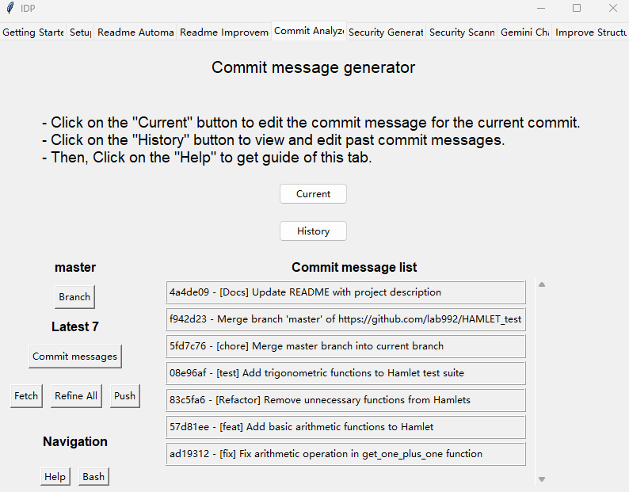
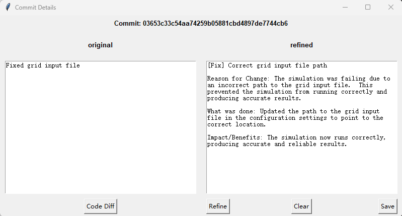

History Commit Message Refinement
Introduction
This section introduces the History Commit Message Refinement function in Commit Analyzer tab.
Right Frame: Commit Message List
This frame displays the commits based on your selection. You can click on a commit to refine it individually.
The left panel shows the original commit message.
The right panel shows the refined commit message.
Code Diff: Displays the code diff for the selected commit.
Refine: Generates a refined commit message based on the original message and code diff. You can also manually edit the refined message.
Clear: Clears the refined message.
Save: Saves the refined message.